3
Editing Modgens
- Using the Modgen On-Canvas Commands
- Support for Row Regions
- Generating Reusable Modgen Templates
- Adding Dummy Devices
- Adding Body Contacts
- Defining Grid Placement
- Specifying Guard Rings
- Abutting Devices
- Specifying Device Alignment and Spacing
- Merging Layers
Using the Modgen On-Canvas Commands
Virtuoso provides the following Modgen on-canvas commands that can be used to perform certain tasks without opening the Modgen Editor. To access the Modgen on-canvas commands, either select the Modgen constraint in the layout canvas and choose Modgen from the shortcut menu or select Place—Modgen.
|
If the selected device(s) are not part of an existing Modgen constraint, creates a new Modgen constraint. The Modgen Editor is not displayed.
If the selected device(s) are part of an existing Modgen constraint, opens it in the Modgen Editor. For more information, see |
|
|
Generates a reusable template for each device group available in the given Modgen. |
|
|
Applies existing Modgen reuse templates to the specified instances to generate matching Modgens. |
|
|
Displays the Grid Pattern Editor and Grid Pattern Mapping assistants. For more information, see Grid Pattern Editor. |
|
|
Unabuts the Modgen devices. For more information about the abutment and unabutment options, see Abutting Devices. |
|
|
Displays a submenu with the following commands that can be used to add or remove dummies:
For more information, see Adding Dummy Devices. |
|
|
Displays the Set Member Alignment and Spacing form to specify the alignment and spacing values for the Modgen devices. For more information, see Specifying Device Alignment and Spacing. |
|
|
Displays the Select merge layers form, in which you can specify the layers that need to be merged. For more information, see Merging Layers. |
|
|
Displays a submenu with the following commands that can be used to create different types of guard rings: For more information, see Specifying Guard Rings. |
Assistants:
As in the case of other layout instances, you can use the Property Editor assistant to interactively update the properties of a Modgen.
You can use the Property Editor assistant to edit attributes of the Modgen currently selected in the layout design. Any changes you make to the Modgen properties are immediately applied to the Modgen in the layout canvas, as displayed in the figure below.
Support for Row Regions
(ICADVM20.1 EXL Only) All Modgen creation, modification, and regeneration commands, including the Modgen on-canvas commands, recognize row regions. Therefore, a Modgen, when created or regenerated, automatically fits into an existing row region that is valid for the members in the Modgen configuration. If invalid, the row region is ignored during Modgen generation.
When a Modgen is created interactively from the layout design, the orientations of the Modgen members may be altered to ensure compact placement of the Modgen members within the placement rows.
For more information about the row infrastructure, see
For more information about the various row-based SKILL functions, see
For more information about the SKILL functions to define placement area, see
Generating Reusable Modgen Templates
(ICADVM20.1 Only) Virtuoso supports a template-driven Modgen reuse solution to help improve layout productivity. A Modgen template comprises a set of Modgen parameters, such as the interdigitation pattern, abutment, dummy definitions, and spacing values, that can be reused to create a gridded layout of matching structures.
This section covers the following topics:
- Template-Driven Modgen Reuse Flow
- Generating a Modgen Template File
- Reusing the Modgen Template File
Template-Driven Modgen Reuse Flow
The following diagrams depict the template-driven Modgen reuse flow.
- The tool extracts Modgens from the source layout for important structures in the source schematic (Flow 1) and for existing Modgens, if available (Flow 2).
- The information is saved in the Modgen template files.
- The template files are then grouped by their structure type. The Modgen templates are reused in the target layout to generate Modgens that include similar structures in the target schematic.
Generating a Modgen Template File
To generate a Modgen template file:
- Select the required Modgen constraint either in the layout canvas or in the Constraint Manager assistant.
-
Open the Reuse Template Exaction form using one of the following methods:
- Choose Place—Modgen—Extract Template.
- Choose Layout Reuse—Create Reuse Templates from Modgens in Constraint Manager.
- Choose Layout Reuse—Create Reuse Templates from Layout in Constraint Manager.
-
Use the gpeTemplateExtractLaunchForm SKILL function.
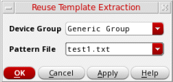
- Specify a Device Group. Template files are created under matching or specified group names. Default is Generic Group.
-
Specify a Pattern File name with the
.txtextension. This is the Modgen template file. - Click Apply to save the template file.
- Click OK. Constraint parameters from the source Modgen are stored in the template file.
Corresponding SKILL Functions:
Parameters of a Modgen Reuse Template File
A Modgen template comprises a set of Modgen parameters that can be reused to create a grid-based layout of matching structures. The following image shows a sample Modgen reuse template file:
The following table describes the parameters of a Modgen template file:
Reusing the Modgen Template File
The Modgen template file created above can be reused to generate a new Modgen constraint. To create a Modgen using a template file:
- Navigate to the schematic design.
- Select the target devices in the Circuit Prospector assistant. These are the devices to be included in the new Modgen.
-
In Layout EXL, choose Place—Modgen—Create Modgen From Template. The Apply Reuse Template form is displayed.
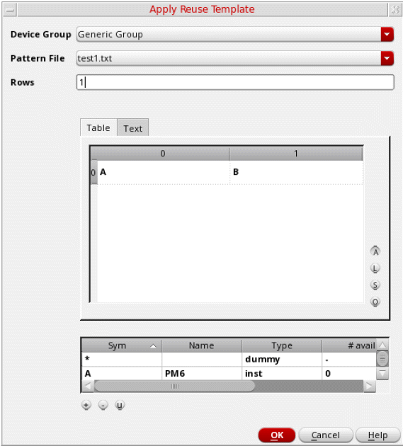 - Select the Device Group that contains the required Modgen reuse template.
- Select the Pattern File corresponding to the Modgen template to be applied to the new Modgen. Parameters from the pattern file are loaded in the form.
- Specify the number of Rows to be generated.
- Update the pattern as per your requirements.
-
Click OK to generate the Modgen. The new Modgen is listed in the Constraints Manager assistant.
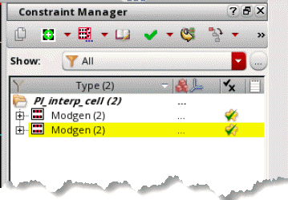
Corresponding SKILL function:
Adding Dummy Devices
Dummy devices are created to counter electrical effects that are observed at small geometries. You can create dummies around devices in Modgens.
A device instance is considered a dummy if one or more of the following conditions are met:
-
The instance has one of the following properties set to
t: -
The instance has the
lxDummyOwnerproperty. -
The instance is not bound to the schematic. This behavior is controlled by a the
modgenCreateUnboundAsDummiesenvironment variable. The default value ist. In this state, the instance is considered a dummy. When set tonil, the instance is not considered a dummy. -
The instance gate net is the same as that assigned to the environment variable
modgenDummyNet.
This section covers the following topics about creating and editing dummy devices:
- Creating Dummy Devices
- Adding Dummy Device Rows or Columns
- Adding Dummy Devices to the Array
- Backannotating Dummy Devices
- Removing Dummy Devices
- Deleting Dummies
Creating Dummy Devices
To create dummy devices, with the Modgen editor open:
- Select one or more Modgen instances.
-
Click the arrow next to the Add Dummy 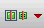
button on the toolbar.
Alternative method: If the Modgen editor is not open, use the Modgen on-canvas command Place—Modgen and select the required location option. -
Choose one of the following location options:
-
Add Dummy Left: Adds dummy devices to the left of the selected Modgen instances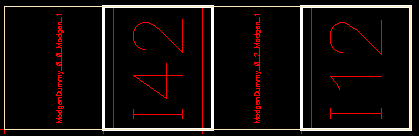
-
Add Dummy Right: Adds dummy devices to the right of the selected Modgen instances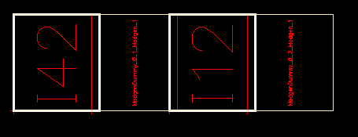
-
Add Dummy Top: Adds dummy devices above the selected Modgen instances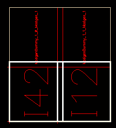
-
Add Dummy Bottom: Adds dummy devices below the selected Modgen instances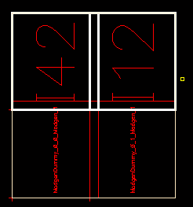
-
Surround Dummies: A ring of dummies is added around the selected Modgen instances. For more information, see Adding Surround Dummies.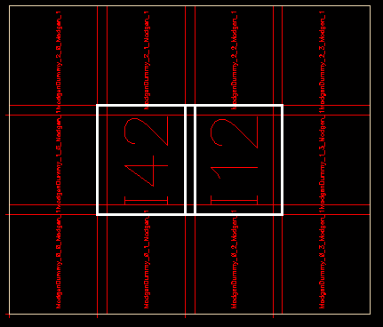
-
Add Dummy Left: Adds dummy devices to the left of the selected Modgen instances
Adding Dummies to Sides
On selecting a dummy side, the Dummy Options form is displayed.
- Apply To lists the selected Modgen instances.
-
In the Dummy Net section, specify the nets to which you want the dummy terminals attached.
-
To attach all selected dummy terminals to the same net, choose a net name from the Default combo box, which lists all nets that are connected to objects in the active Modgen.
To choose a net that is present in the cellView, but not in the current Modgen, type the net name in the Default combo box. The entry is validated against all existing nets in the current cellView. If a matching net is not available in the current cellView, then a warning message is issued and the net is created.
Corresponding Environment Variable: modgenDummyNet -
To connect individual dummy terminals to different nets, enable the Set Individual Terminal Net check box.
A list of dummy terminals that are available in the current design is displayed. Use the combo box beside each dummy terminal name to specify the net to which it needs to be connected.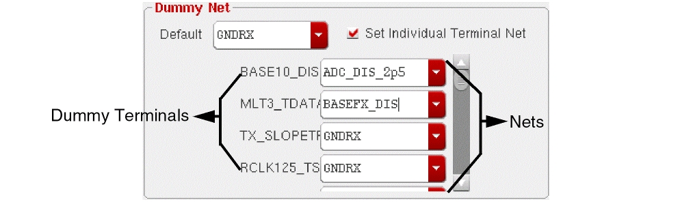When Set Individual Terminal Net is enabled, the Default combo box is also still available. If you choose a different net in the Default combo box, then the selected net is applied only to the dummy terminals for which you have not specified individual terminal nets.
-
To attach all selected dummy terminals to the same net, choose a net name from the Default combo box, which lists all nets that are connected to objects in the active Modgen.
-
In the Dummy Type section, from the Type cyclic field, choose one of the following options:
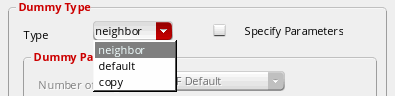-
neighbor: The master
lib:cell:viewof the dummy will be the same as the neighboring device. -
default: you can specify a different master
lib:cell:viewfor the dummy devices. - copy: Creates identical dummies of the selected instances. In this mode, the dummy parameters and default values of the source instances are used. Different values cannot be specified.
Corresponding Environment Variable: modgenPhysConfigs -
neighbor: The master
- Select Specify Parameters to edit the default dummy parameters.
- In the Dummy Parameters section, from the Number of Fingers cyclic field, choose one of the following:
- From the Length cyclic field, choose one of the following:
-
(IC6.1.8 only)
From the Width cyclic field, choose one of the following:- CDF Default – The default number of fins, as specified in the CDF is considered
- Same As Neighbor – The width of fingers of the neighboring device is considered
-
Specify – You can specify the width of fingers in the box beside the Width cyclic field
In ICADVM20.1, the Width cyclic field is replaced by the Number of Fins cyclic field. From the Number of Fins cyclic field, choose one of the following:- CDF Default – The default number of fins, as specified in the CDF is considered
- Same As Neighbor – The number of fins of the neighboring device is considered
-
Specify – You can specify the number of fins in the box beside the Number of Fins cyclic fieldThe default values for the Number of Fingers, Length, and Width / Number of Fins cyclic fields are determined by the modgenMakeMinDummies environment variable. For more information, see Understanding the Neighbor Dummy Type.
When Width represents the total width for the device (number of fingers * finger width), set the modgenWidthParamProportionalToFingers environment variable totto indicate that the finger width of Modgen dummy instances must be proportional to the number of fingers. For FinFET devices, the default value isno; for non-FinFET devices, the default value isyes. -
If you chose the Dummy Type as default, click Browse under Default Dummy to browse for the library, cell, and view you want for the dummy devices.
Corresponding Environment Variable: modgenDummyLib, modgenDummyCell, modgenDummyView -
Select the Remember Values check box to save these values for all dummy devices.
These values are saved on a per-user basis. So the Module Generator will always load these values until you overwrite them with new saved values.
Corresponding Environment Variable: modgenRememberDummyVals - Click OK or Apply.
(ICADVM20.1 Only) For FinFET devices to support operations such as dummy creation, their component class must be set to NFIN or PFIN. To define these component types and assign devices to them, use either the Configure Physical Hierarchy command or the library and attributes mapping (LAM) file.
In addition, the Number of Fins parameter must be included in the value of
envSetVal("layoutXL" "transistorWidthParamNames" 'string "nfin nFin w wr")
Adding Surround Dummies
To add surround dummies around the selected Modgen instances, select Surround Dummies from the Add Dummies drop-down list in the Modgen editor. The
Surround Modgen form is displayed.This form lets you perform the following tasks:
-
(ICADVM20.1 Only) Load default values: Default values provides a list of pre-registerd SKILL call back functions from which you can load the values. This is helpful when you want to apply the same style across designs. You can load the values and edit them as per your requirement.
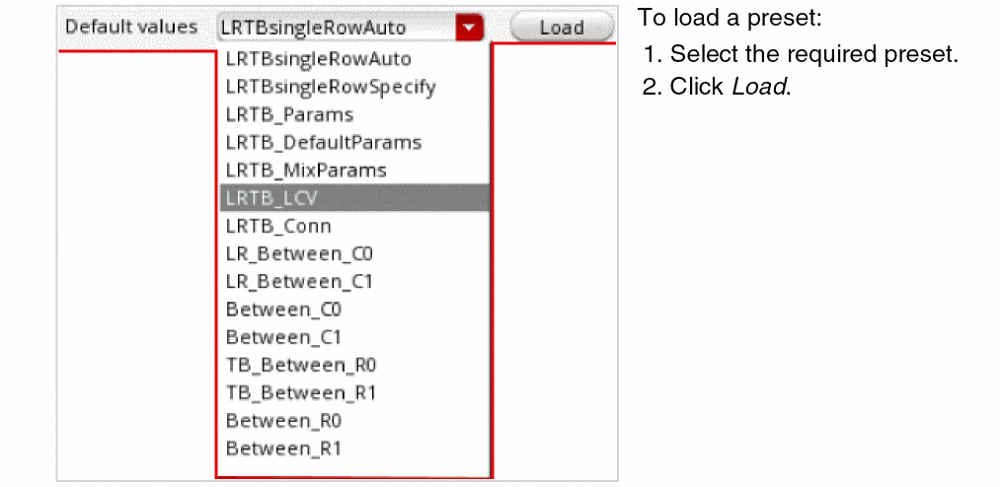 -
(ICADVM20.1 Only) Select the sides: Choose one or more sides (Top, Left, Right, and Bottom) to add surround dummies. In the following example, dummies are added to all four sides of the Modgen constraint.
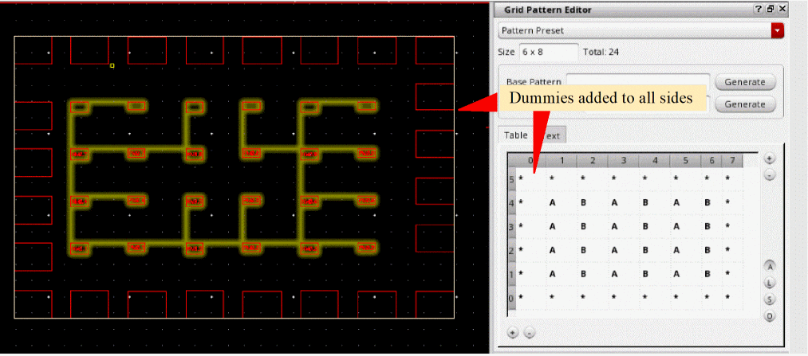 -
Specify the cellview: On the Master tab (default), specify the Library, Cell, and View to be used to create custom dummy devices.
-
Set the dummy parameters: The Parameters tab provides options to specify dummy parameters.
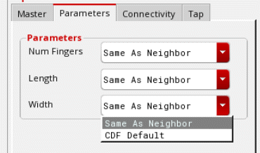Specify the following options:- Number of fingers (Num Fingers) in each dummy. You can either type the required value in the field or choose from the following values:
- Length of dummy fingers. You can either type the required value in the field or choose Same as Neighbor or CDF Default.
-
Width of dummy fingers. You can either type the required value in the field or choose Same as Neighbor or CDF Default.
-
Define Connectivity: On the Connectivity tab, choose the net to which all dummy terminals must connect. If left blank (no net is selected), no terminals are created.
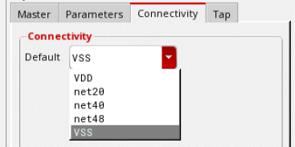 -
(ICADVM20.1 Only) Insert Tap Cells: The Tap tab provides the following options:
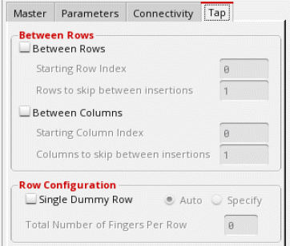The options let you:-
Insert dummies Between Rows and Between Columns by specifying the starting row or column index and the number of rows or columns to be skipped between dummy insertions.
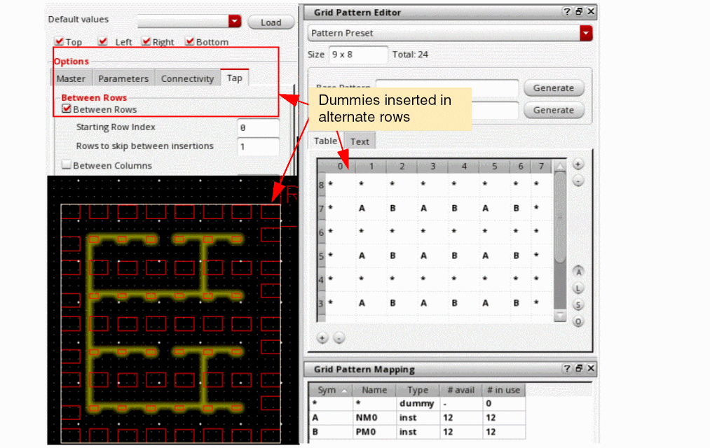 -
Insert a Single Dummy Row instead of individual dummies for each device. You can also specify the number of fingers to be inserted in each dummy row.
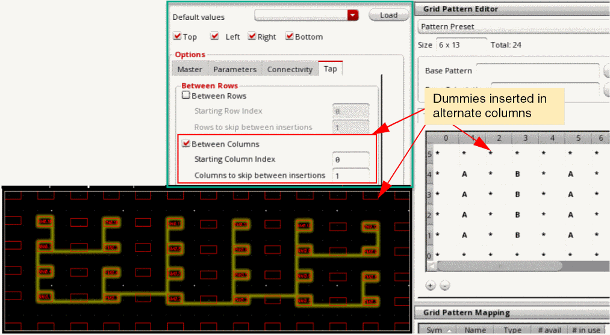
-
Insert dummies Between Rows and Between Columns by specifying the starting row or column index and the number of rows or columns to be skipped between dummy insertions.
Understanding the Neighbor Dummy Type
If the environment variable is set to nil, then the dummy is created using the lib/cell/view of the neighboring device.
If the modgenMakeMinDummies environment variable is set to t, the following happens when a neighbor dummy is added to a MOSFET:
- If the dummy’s location is on the right or left, a single finger, minimum length device is created to serve as the dummy.
- If the dummy’s location is on the top or bottom, a minimum width device with the same number of fingers as the neighbor is created to serve as the dummy.
- If the dummy’s location is on the right or left, a single segment, minimum length device is created to serve as the dummy.
- If the dummy’s location is on the top or bottom, a minimum width device with the same number of segments is created to serve as the dummy.
In this case, the parameters for fingers (lxFingeringNames), width (transistorWidthParamNames), and s-factor (sfactorNames) are used to create the device.
The lxFingeringNames environment variable specifies parameter names that define Pcell gate fingering in VLS -XL. In addition, this environment variable is used by the Modgen placer when adding dummy devices to MOSFETs with the environment variable set to t.
For more information, refer to the Virtuoso Layout Suite XL User Guide.
Changing Dummy Properties
You can change parameters of dummy instances using the Property Editor assistant in the Modgen editor window. To open the Property Editor assistant, right-click the menu area and select the Property Editor option from the shortcut menu.
After changing the parameter values, these changes are retained in the dummyParams member parameter in the constraint.
Defining Connectivity for Dummies
Use one of the following methods to reset the connectivity of dummies.
Using the Property Editor Assistant
Use this method to individually reset connectivity of terminals within a dummy. Each terminal can be connected to a different net. To reset connectivity using this method, open the Property Editor assistant by right-clicking the menu area and selecting the Property Editor option from the shortcut menu. Then, filter dummies by connectivity and change the net name.
Using the Modgen Pattern Editor
Use this method to connect all terminals within a dummy to a single net. Select the net name from the Net combo box in the Modgen Pattern Editor and click OK.
The current settings override all previously-defined connectivity settings.
Adding Dummy Device Rows or Columns
To add dummy devices around an array:
-
Select any device in an outer row or column of the array.
Modgens provides the ability to add an entire row or column of dummy devices by selecting only one reference device. For instance, you can select any device in the left column and select Add Dummy Row/Column > Left to add an entire column of dummies to the left of the Modgen. The Dummy Optionsform is displayed.
You can either set up the dummy options or accept the default options. -
Select the Specify Parameters check box in the Dummy Parameters section to specify the number of fingers, length, and width for all dummy devices. If the Specify Parameters check box is not selected, then the default values for these fields is determined by the modgenMakeMinDummies environment variable. For more information, see Understanding the Neighbor Dummy Type.
- Modify dummy device options as desired. For more information, see Adding Dummies to Sides.
-
Click OK or Apply.
- Clicking OK applies the current settings and closes the form.
- Clicking Apply commits the changes, but keeps the form open for further modifications.
The Module Generator places the dummy devices as directed.
Adding Dummy Devices to the Array
You can also choose to add dummy devices to the entire array.
- Select any device in an outer row or column of the array.
- On the Modgen toolbar, click the arrow next to the Add Dummy Row/Column button and choose the location.
Backannotating Dummy Devices
Modgen dummy devices in the layout can be backannotated to their corresponding schematic to keep the two views synchronized. If the dummy layout instance is already bound to a symbol in the schematic, no back annotation is performed for that instance.
At any point, you can run Check Against Source to check for any instance mismatches with the schematic.
To know more about dummy backannotation, see
Removing Dummy Devices
To remove a dummy device, do one of the following:
- Select the dummy device and click the Delete button on the toolbar.
- Select the dummy device and press the Delete key.
Select Place—Modgen—Remove Modgen Surround Dummies to remove surround dummies in the layout canvas.
Deleting Dummies
In the Modgen toolbar, click the arrow next to the Add Dummy Row/Column button and click one of the following buttons:
- The Delete All Dummy Rows/Columns button to delete all dummy rows and columns of the Modgen. Alternatively, use the mgDeleteAllDummyRowColumnCB command.
- The Delete All Dummies button to delete all dummies in the design.
Adding Body Contacts
You can define properties for body contacts in the Body Contact Options form, then add body contacts to the array in the layout.
Defining Body Contact Properties
In the Body Contact Options form, you can specify the type, net, and separation distance for body contacts. Because the body contact created by the Modgen tool matches the height of the member instance, you also need to specify which reference layer the body contact matches. If you do not specify a reference layer, the Modgen tool will match the body contact to the height of the bounding box of the member instance. The Modgen tool also uses the reference layer to calculate the separation distance.
-
In the toolbar, click the Add Body Contact 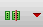
button.
The Body Contact Options form appears.
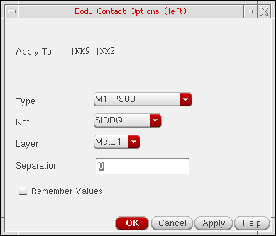 -
From the Type cyclic field, choose the type of body contact you want.
This field is populated from the technology file. - The Net combo box lists the nets that are connected to objects in the active Modgen. Choose the net to which you want body contacts attached to. To choose a net that is present in the cellView, but not in the current Modgen, type the net name in the Net combo box. The entry is validated against all existing nets in the current cellView. If a matching net is not available in the current cellView, then a warning message is issued and the net is created.
-
From the Layer cyclic field, choose the reference layer for the body contacts.
Environment Variable: modgenRememberBodyContactVals -
In the Separation field, enter the distance in microns that you want between body contacts and devices. This value is added to minimum DRC to space the body contact.
- Select the Remember Values check box to save these values for all dummy devices.
- Click OK or Apply.
Adding Body Contacts
You have two options for adding body contacts. You can add them in the layout on a row or column basis, or you can add all body contacts using the Modgen toolbar.
Adding Body Contact Rows and Columns
You can add body contacts on a row or column basis in the layout.
-
Select a device in a row or column of the array.
The body contacts you can add are dependent on which device you select. - Do one of the following:
Adding Body Contacts to a Selected Device
You can also add body contacts to the selected device(s).
Editing Body Contact Properties
You can edit body contact parameters using the Property Editor assistant in the Modgen editor window. To open the Property Editor assistant, right-click the menu area and select the Property Editor option from the shortcut menu.
The modified parameter values are applied to the selected body contact.
Removing Body Contacts
To remove body contacts, do one of the following:
- Select the body contact and click the Delete button on the toolbar.
- Select the body contact and press the Delete key.
Defining Grid Placement
The Grid Placer is a back end placement engine for Modgen to generate the DRC-correct array placement. The Grid Placer places a set of instances according to their grid indexes into an array-like placement compacted to the minimum DRC and constraint-correct spacing. In addition, it enables you to specify the array size in terms of the number of rows and number of columns.
As compared to the previous Modgen placement engine, the Grid Placer provides fast and flexible placement, which supports the constraints between member instances, well merging, and complex guard ring creation.
With the introduction of the Grid Placer, the semantics of the Modgen's horizontal and vertical alignment member parameters has changed. Earlier, alignment was relative to the sides of a grid cell as shown below:
With the Grid Placer, the alignment is relative to a member's left or bottom neighbor. Therefore, setting a member's alignment to the left aligns its left edge with the left edge of the member below it. If the member is in the bottom row, vertical alignment had no effect. This is illustrated in the image below:
Typically, Modgens are snapped to the manufacturing grid resolution as specified in the technology file when Generate From Source or Generate Selected From Source is used.
You can also snap Modgen origin to the snap spacing specified by the modgenUseSnapSpacing environment variable in the .cdsinit file.
figGroup bbox. The snapping is with respect to the Modgen origin.Placing Body Contacts
Body contacts for a device in the grid are supported by the Grid Placer. The Grid Placer is not responsible for creating the body contact geometry, but only for the placement of the body contacts. You can define the relative position, such as left, right, top, or bottom and spacing between the body contacts and member instance of the grid. It also incorporates the DRC between the body contact and neighbor grid geometry as a hard constraint.
The Grid Placer also supports automatic minimum DRC spacing based placement for a body contact. This minimum DRC spacing would be obtained from the process rules on the database object.
Calculating DRC Rules
You can use the Process Rule Editor to query minimum spacing rules for a single or different layer to calculate the DRC rules between the neighboring grid objects.
For same layer, you need to use the constraint definition minSpacing, while for different layers you need to use minClearance. While setting DRC rules between two devices, you need to consider the maximum of the minSpacing or minClearance values obtained from the Process Rule Editor on each of the two devices.
Corner Case Conditions for Grid Placer
The parameters entered by users to define a Modgen can be put in two categories: one that defines the overall Module, and the other that defines each grid.
The module-level input parameters include the number of rows/columns, guard rings, row routing spacing estimation, and constraints between grid objects.
The grid-level input parameters define each grid object and its neighbors. This includes, row/column index, alignment, custom spacing, abutment, body contact, well layer, and DRC rules.
A combination of both these input parameters can create conflicts.
Body Contact v/s Well Merge
Let’s consider a scenario of a possible conflict between body contact and well merge.
Scenario 1:
If the well-merge option is on, and the body contact has either the same well layer as the instance or no well layer in its geometry. Then, you enclose the body contact geometry with the well layer of the instance as shown in the image below.
Min-enclosure process rules need to be maintained between the well layer and the body contact geometry. However, if the body contact has a different well layer than the instance, you do not enclose the body contact with the well geometry of the instance.
Scenario 2:
If the well-merge option is on, and two neighboring instances in the grid sharing a common body contact also share the same well layer, then the well layers of both instances are merged maintaining minimum enclosure and minimum DRC rules as shown in the image below.
However, if the shared body contact happens to have a different well layer as the neighboring instances, well-merging would be disabled in this special case.
Snapping Instances in Modgens (ICADVM20.1 Only)
To support FinFETs, the layout editor has been enhanced to automatically snap the Pcells in Modgens to the snap pattern. The entire Modgen block is, therefore, snapped to the top-level snap pattern shape. For more information about snap patterns, see
Specifying Guard Rings
Guard rings are used to enclose one or more objects such as devices or device chains. You can use the Modgen tool to create multipart path (MPP) guard rings and fluid guard rings. Before creating guard rings, ensure that they are defined in the technology file.
For more information about the procedures for creating the following types of guard rings, see:
- Creating Multipath Part (MPP) Guard Rings
- Creating Fluid Guard Rings
-
Creating Identical Guard Rings (ICADVM20.1 Only)
Creating Multipath Part (MPP) Guard Rings
The Modgen tool can generate a guard ring based on MPPs defined in the technology file. In the Guard Rings page of the Module Generator form, you can specify the guard ring type, shape, net, separation distance, and MPP.
You can either specify one spacing value that defines the separation between all four sides of the guard ring and the devices, or you can define a different value for each side. This spacing value is in addition to the minimum DRC distance. So, when creating a guard ring, the Modgen tool first finds the minimum DRC location at which to place the guard ring, examining each layer, then adds the specific spacing values to that distance in order to calculate the final location. To specify guard ring properties:
-
On the Modgen toolbar, click the Guard Ring 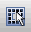
icon and choose Create MPP Guard Ring.
The Guard Ring Options form is displayed.
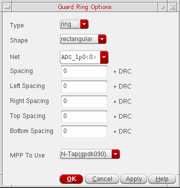 -
From the Type drop-down field, select the type of guard ring you want.
The Type drop-down field has the following options - From the Shape field, select the shape of guard ring.
- From the Net combo box, select the net you want the guard ring attached to.
-
Specify the Spacing between the sides of the guard ring and the devices by doing one of the following:
To specify the same Spacing value for all sides of the guard ring:
To specify different spacing values for each side of the guard ring: - From the MPP To Use cyclic field, choose an MPP for the guard ring.
-
Click OK or Apply.
- Clicking OK applies the current settings and closes the form.
- Clicking Apply commits the changes, but keeps the form open for further modifications.
The Module Generator creates a guard ring around the array using the parameters that you specified.
Creating Fluid Guard Rings
In addition to MPP guard rings, you can use the Modgen editor to create fluid guard rings (FGRs) around objects. FGRs are a type of fluid Pcells that can be used to enclose one or more objects such as devices or device chains. Before creating FGRs, ensure that the FGR is installed as a device class in the technology file. For more information about FGR installation, see Installing Fluid Guard Rings in the Virtuoso® Fluid Guard Ring User Guide.
To create an FGR, click the Guard Ring icon on the Modgen toolbar and choose Create Fluid Guard Ring
.The Create Guard Ring form is displayed.
Typically, in Virtuoso Layout Suite L (Layout L), FGRs can be created in four different ways: by drawing a path, rectangle, or polygon, or by using the wrap mode. Each of these different modes represent a tab on the Create Guard Ring form. However, the Modgen Editor only supports creation of FGRs in the Wrap mode. In this mode, an FGR is created around the objects you select. The fluid guard ring parameters are stored in the Modgen constraint.
For information about options on the Wrap tab of the Create Guard Ring form, see
Hand Editing Fluid Guard Rings
When a Modgen is edited, the fluid guard rings in the Modgen are regenerated automatically. As a result, all the manual edits made to the fluid guard rings are lost. To avoid this, switch to the hand edit mode for the fluid guard rings. In this mode, fluid guard rings are not regenerated each time the Modgen is updated. Therefore, all customizations remain.
To switch on the hand edit mode, either select Enable Fluid Guard Ring Hand Edit Mode from the Guard Ring menu, or use the mgFGREnterHandEdit SKILL function.
To switch off the hand edit mode, either select Disable Fluid Guard Ring Hand Edit Mode from the Guard Ring menu, or use the mgFGRExitHandEdit SKILL function.
Creating Identical Guard Rings (ICADVM20.1 Only)
In addition to MPP and fluid guard rings, you can create identical guard rings in Modgens. Identical guard rings are composed of unit cells that match the guarded instances in terms of their number of fingers, number of fins, finger alignment, and other parameters.
The following diagram depicts identical guard rings:
Select the Create Identical Guard Ring command from the Guard Ring menu to display the Identical Guard Ring Options form.
The Identical Guard Ring Options form contains the following options:
-
Type defines the way in which the identical guard ring surrounds the adjoining Modgen instances. Choose one of the following guard ring types:
- None: Deletes the identical guard ring.
-
Surround: The identical guard ring surrounds all the instances.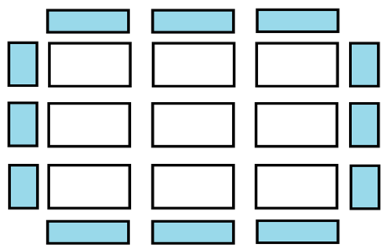
-
Surround+Strip: The guard ring surrounds all the instances, and strips of guard ring instances are inserted between one or more Modgen rows.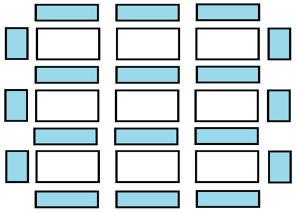
-
Grid: The guard ring surrounds every instance or group of abutted instances separately.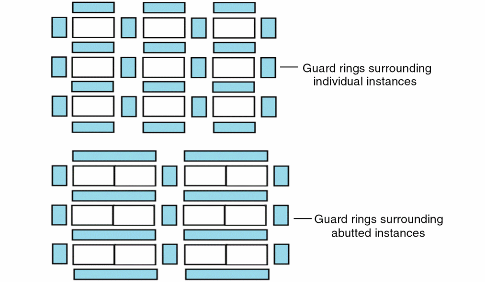
-
Horizontal Strip Width (in fins) value specifies the vertical width (as a number of fins) of the horizontal guard ring strips, represented by the horizontal blue rectangles in the diagram above.
-
GR Definition is a definition provided by the PDK that defines many aspects of the guard ring. It provides information such as the unit cell
lib:cell:view, its parameters, and parameter callbacks, which helps Modgens instantiate the guard ring correctly. - Net specifies the net to which the guard ring needs to be connected.
-
Break GR affects the
Metal1layer of all vertical guard ring strips except those on the left side of the guard ring. The effect is determined by the GR Definition, but usually theMetal1layer is trimmed from the bottom as depicted in the following diagram.
The Break GR option is used to provide spaces for connecting guarded instances via theMetal1layer routes. - Add Corners creates guard rings at all available corners around the selected instances.
-
The side switches turn on or off the guard ring for the specified sides. For example, the following diagram depicts a Grid guard ring in which the right side is turned off.
-
Number of Rows Between Strips is available when Type is set to either Surround+Strip or Grid. It specifies the number of instance rows that are required between strips of guard rings, counting from the bottom row.
Example 1: Type is set to Surround+Strip; Number of Rows Between Strips is set to2
Example 2: Type is set to Grid; Number of Rows Between Strips value is set to2.
Modifying a Guard Ring
To modify an existing guard ring:
-
Do one of the following:
- In the toolbar, click the Guard Ring icon.
- Right-click outside the array and choose Edit Guard Ring.
The Guard Ring Options form appears. -
Modify the guard ring options as desired.
For more information, see Specifying Guard Rings. - Click OK when finished.
Snapping Fluid Guard Rings to Fin Grids (ICADVM20.1 Only)
When you create an FGR for a FinFET device, the FGR instance automatically snaps to the underlying fin grids if the Snap Pattern Snapping check box is selected in the
For detailed information about snap pattern grids in the layout canvas, refer to the
Removing a Guard Ring
Use one of the following methods to remove an existing guard ring:
Method 1:
Method 2:
-
Do one of the following:
- In the toolbar, click the Guard Ring icon.
- Right-click outside the array and choose Edit Guard Ring.
The Guard Ring Options form appears. - From the Type cyclic field, choose none as the type.
- Click OK when finished.
Abutting Devices
For MOSFET member instances, Modgen supports abutment of devices. When you abut a device, Modgen remains aware of connectivity and may flip the device to correctly abut.
You can also abut dummy devices to other devices, including other dummies. Internally, the dummy device’s net may be changed from the default specified in the Dummy Options form, but if the dummy device is removed from abutment, the net will revert to the default. When two instances are abutted, any body contacts between them are deleted.
Modgen abutment uses the Layout XL chaining engine. Therefore, the abutment results are subject to the settings of the Layout XL chaining environment variables. For more information about these environment variables, see chainMirror and chainMirrorEquivOrients. These environment variables are enabled by default, and may therefore result in unintended changes to the orientation of instances.
Prerequisites
The devices to be abutted must be registered as component types. It addition to abutment, this is a key requirement for operations like chaining and folding devices, identifying pseudo-parallel nets, and identifying devices and structures using the Circuit Prospector assistant (this is a schematic XL feature) in Schematic view.
If the devices are not registered in the PDK, use one of the following methods to register devices as component types:
- Use the ciRegisterDevice function.
- Use the cph.lam file to assign the devices to component types NMOS, PMOS, NFIN, or PFIN. For more information, see Library and Attributes Mapping File Syntax.
- Use the Component Type mode of the Configure Physical Hierarchy window to assign the devices to component types NMOS, PMOS, NFIN, or PFIN.
To set up the component types in the Configure Physical Hierarchy form:
-
Select Edit – Component Type. The Configure Physical Hierarchy window appears.
-
Right-click the No component type directory and select the Add component type option from the shortcut menu. The Create Component Type dialog box is displayed.
- Type the name of the component type and click OK.
-
Select the newly added component type and specify its attributes in the Attributes section.
-
Click the
+symbol next to No component type to expand it. -
Right-click the master cell you want to move and select the Move cells option from the shortcut menu. The Move Cells dialog box is displayed.
- From the Select new component type drop-down menu, select the component category you want to move the cell to and click the OK button.
- Click the Save icon.
Now, to abut devices, you need to perform the following steps:
-
Do one of the following:
- In the Modgen toolbar, click the Abut icon.
- Right-click the array and choose Abut.
-
Select Place—Modgen—Abut Modgen Instances. By default, during abutment, the selected instances are mirrored, if needed. However, you can control whether to use mirroring instances or permutation of pins during the abutment process. To switch off mirroring and turn on pin permutation, set the chainPermutePins
cdsenv variable to t.
Synchronized Abutment of Instances
To run the same abutment for all rows in the Modgen, before running the abutment command, turn on synchronized abutment by clicking the Synch Abut button on the Modgen toolbar.
Instances in all rows of the Modgen are abutted in a synchronized operation along the column.
Turn off the Synch Abut button (default) to abut each row individually, without considering the other rows.
Removing Abutment from Devices
If you do not want devices in a module generator array abutted:
Abutting All Devices
You can also choose to abut all devices.
The cdsenv variable enables you to abut all devices.
The cdsenv variable allows dummies to have different connectivity on source and drain.
Creating Multiple Abutment Scenarios
Each Modgen constraint can be associated with multiple abutment scenarios. The Abutment parameter can take multiple values (0, 1, 2, 3, and so on), where each value is assigned to a different abutment scenario. The default value 0 means no abutment.
Use the following SKILL functions to register, retrieve, and unregister abutment scenarios:
-
mgRegUserProc: Registers abutment scenarios in the Modgen code to enable callbacks -
mgGetRegUserProc: Displays information about registered abutment scenarios -
mgUnRegUserProc: Unregisters the specified abutment scenarios
Removing All Abutment
You can also choose to remove abutment from all devices.
Abutment of Dummy Shapes in Pcells (ICADVM20.1 Only)
The Modgen editor now supports the new Pcell abutment capability supported by Virtuoso Layout Suite XL. At advanced nodes, the Modgen editor supports the abutment of shapes in Pcell submasters that are not attached to pins. In addition to the usual abutment properties, these shapes also require an abutment name to be set in the Pcell SKILL code.
For more information about abutment at 20nm, see
Specifying Device Alignment and Spacing
Since one Modgen module can contain instances with different Pcell masters, the instances can have different dimensions. To arrange instances with different heights within a module, you can specify the vertical bounding box alignment (top, center, or bottom).
When devices are aligned at the top, the top edges of the instances are aligned at the same Y-coordinate, while bottom edges are aligned at the same Y-coordinate for bottom alignment. For center alignment, the center of shorter instances are aligned with the center of the largest instance.
The default vertical alignment is bottom. If you want to modify this alignment:
- Select the devices you want aligned.
- Do one of the following:
You can also align using the Set Member Alignment and Spacing form.
-
(Optional) Select the devices you want aligned.
-
Do one of the following:
- Right-click and choose Set Member Alignment/Spacing.
- Click the Member Spacing/Alignment icon on the Modgen toolbar.
The Set Member Alignment and Spacing form appears.
-
Specify the horizontal and vertical spacing and alignment settings. Horizontal alignment refers to the alignment of instances along the horizontal axis, which is the x-axis. Vertical alignment refers to the alignment of instances along the vertical axis, which is the y-axis.
The Alignment fields display the default Horizontal and Vertical alignments of the selected instances. In the above example, all selected instances have the same vertical and horizontal alignments, “left” and “top” respectively. In the example below, the selected instances have the same vertical alignments, but their horizontal alignments are different. So, the horizontal Alignment is set to (various).
When you change the Alignment from various to any other value, the various option disappears from the Alignment drop-down list.To specify different horizontal alignment values, in the Horizontal group box:-
From the Alignment cyclic field, select one of the following options:
left: The left edge of the selected instance is aligned with the left edge of the instance below it.right: The right edge of the selected instance is aligned with the right edge of the instance below it.center: The center of the selected instance is aligned with the center of the instance below it.custom: The left edge of the selected instance is separated by the specified horizontal distance from the right edge of the neighboring instance.
-
From the Alignment cyclic field, select one of the following options:
top: The top edge of the selected instance is aligned with the top edge of the instance to the left.bottom: The bottom edge of the selected instance is aligned with the bottom edge of the instance to the left.center: The center of the selected instance is aligned with the center of the instance to the left.custom: The bottom edge of the selected instance is separated by the specified vertical distance from the top edge of the instance below it.
-
From the Alignment cyclic field, select one of the following options:
-
To specify a custom spacing, choose one of the following from the Alignment drop-down list:
-
custom (refers to
customLeftin horizontal alignment andcustomBottomin vertical alignment) - customRight (for horizontal spacing)
- customTop (for vertical spacing)
With these selections, the spacing and reference options are made available.The spacing field is available when the Alignment is set to custom or customRight/customTop in either one or both of the Horizontal and Vertical sections.The spacing fields display the default Spacing to Left and Spacing to Bottom values of the selected instances. If the spacing values are different for the selected instances, then (various) is displayed.
You can reset the spacing value by specifying a new value in the Spacing to Left and Spacing to Bottom fields and clicking OK or Apply. -
custom (refers to
-
In the Reference section, select a reference Layer and Purpose based on which:
- The horizontal or vertical spacing of devices must be calculated.
- Instances must be aligned horizontally or vertically.
Similar to Alignment and Spacing fields, if the layers and purposes are different for the selected instances, then (various) is displayed. You can reset these values and click Apply or OK. -
Click Save Values to overwrite environment variables with the values specified in the Set Member Alignment and Spacing form.
-
Select Apply to All Modgen Members to apply the custom spacing to all the devices in the module.
If you do not select this option, the custom spacing is applied only to the selected devices. -
Click OK or Apply. Clicking Revert resets the values in the fields with corresponding values from the database.
Clicking Apply commits the changes, but keeps the form open for further modifications to the Modgen members. You can perform tasks such as:
Removing a Custom Spacing Distance
Because custom spacing is interpreted internally as a custom alignment, in order to truly remove a custom spacing distance, you must choose an alignment for the devices. For more information, see Specifying Device Alignment and Spacing.
Merging Layers
Use the Select merge layers... form to specify the layers that need to be merged.
-
To invoke the Select merge layers... form, click the Merge Layers icon on the Modgen toolbar. Alternatively, you can right-click anywhere in the Modgen Editor window and select Merge Layers. The Select merge layers... form is displayed.
- Select the check boxes adjacent to the layers that you want to merge. Alternatively, select one of the Layers Preset: default, well, or none to select all layers of the selected type.
- Click OK.
By default, all the used layers in the layout are listed in the merge layers list box. However, selecting the Use Layer Palette LPPs Only check box in the Layout Editor Options form enables the synchronization between the layers displayed in the list and the layers listed in the Palette assistant of Layout XL.
When you enable layer synchronization and change the filters in the Palette assistant by using the available check boxes (that is, Used, Valid, and Routing), you can ensure that layers of only a specific category are displayed in the merge layers list box. This change is visible when you update the filters in the Palette assistant and then launch the Select merge layers form, as illustrated in the figure below.
Environment Variables: ,
Merging of wells is controlled by the mergeLayer parameter in the Modgen ci constraint. The default value for the mergeLayer parameter in Modgen is default. For backward compatibility with the 614 Modgen constraints, the modgenMergeWells environment variable can be set in the .cdsenv file.
If this environment variable is set to t and the mergeLayer parameter is set to default, then the wells of the Modgen instances will be merged. However, if the environment variable is not set, and the mergeLayer parameter is set to default, the wells in the Modgen layout are not merged.
Other possible values of the mergeLayer parameter are: none, well, and any other custom layer, which can be selected from the Constraint Manager GUI. If mergeLayer is set to none, then there will not be any well merging in the Modgen. If mergeLayer is set to well, then the wells of the Modgen devices will be merged and any DRCs between well layers and other layers of the devices will be ignored. If mergeLayer is set to a custom layer, such as Oxide_thickness, then the shapes on that layer will be merged and DRCs between that specified layer and other layers of the devices will be ignored.
In addition, you can merge multiple layers, such as Nwell and Oxide_thk. Before merging layers, only the top-level net connectivity between the layers is checked. So, layers across devices that have different master Pcells can also be merged. An example for well merging is shown below:
To specify whether the analog placer should have control over the well and body contact geometry, set the aapDefaultWellsUnderPlacerControl environment variable to t.
The merge layer functionality differs when there is a pane guard ring inside the Modgen structure. A layer across a pane guard ring is merged only if one of the following situations is applicable.
- The layer is defined as a recognition layer in the technology file.
- The layer is a well layer with the same net connectivity across all devices and the pane guard ring.
For more information about guard rings, see Specifying Guard Rings.
Return to top